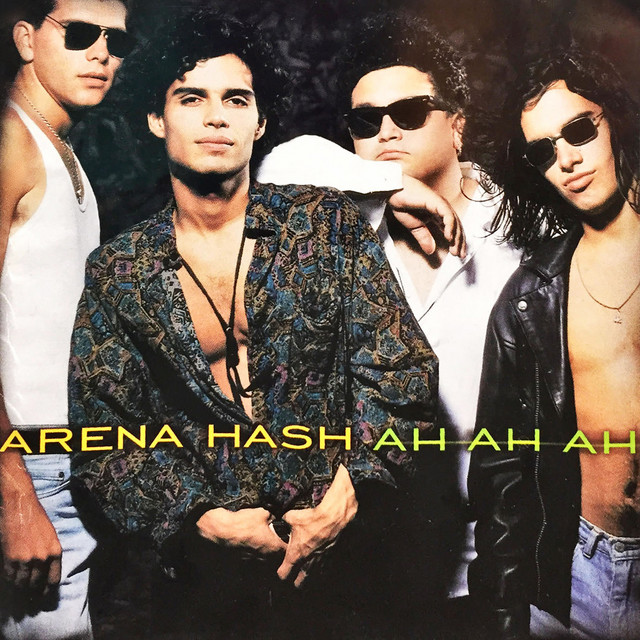

Arena Hash
Fue una banda peruana de rock formada en 1985 por Pedro Suárez-Vértiz como voz y guitarra.

Integrantes del grupo:
Pedro Suarez Vertiz
Patricio Suarez Vertiz
Arturo Pomar
Christian Meier
Discografia
Grandes exitos de Arena Hash
Año
Disco
Su principal discografia fue ah, ah,ah
Arena Hash
1990
Ah, ah, ah
1988
Del archivo de....Arena Hash
1988
Sitio web oficial
https://es.wikipedia.org/wiki/Arena_Hash